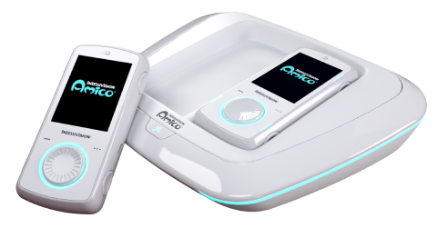

An accomplished musician, Tallarico has been writing music for video games for over 30 years. He has worked on more than 320 game titles; to date, they have sales of more than 250 million units and over 10 billion dollars in revenue. No one in the video game industry has ever worked on more titles and projects. In 2008, he was enshrined in the Guinness Book of World Records with a two-page feature article and interview and currently holds 5 Guinness World Records including the person who has worked on the most commercially released video games and the largest symphony show ever seen live (over 752,000 people in China). In 2013 he was asked to speak at the TED Conference where he gave his very well-received “Video Games – Art in Disguise” speech. In 1994, he founded Tommy Tallarico Studios, the multimedia industry's largest audio production house. In video games, television, film, radio, soundtracks, toys, and even on floats in the New Years' Day Rose Parade in Pasadena CA, Tallarico’s music has been heard by hundreds of millions of people around the world. His top titles include Earthworm Jim, Tony Hawk's Pro Skater, Disney’s Aladdin, Spider-Man, and Metroid Prime as well as top-selling popular game franchises such as Sonic the Hedgehog, Pac-Man, Guitar Hero, Madden Football, Mortal Kombat, Time Crisis, Unreal, Lineage, James Bond, Blitz Football, The 7th Guest, Knockout Kings, Test Drive, Scooby Doo, WWE & Twisted Metal. Tallarico is the creator of the beloved Roblox "Oof" sound which became a worldwide sensation and arguably the most famous pop culture sound of the 21st century garnishing billions of views from memes and YouTube videos worldwide.
Tommy has said he has worked on more than 320 game titles, but that's a lie. On his Wikipedia, it says that he has worked on 64 games, on Mobygames, it says 97, and when you remove all the duplicates from his list on his website, you get 175, and that's even counting games that his company worked on not him.
Another lie is that he has the largest symphony show seen live(Over 752,000 people). This is not feasible because the Beijing Exhibition Center Theater, where he performed has only 2700 seats.
And the last lie is that the TED talk was a TEDx talk.
In 2018 he was named CEO/President of legacy video game company Intellivision Entertainment to help launch a brand new home video game system called the Intellivision Amico.
The Intellivision Amico is an upcoming home video game console that is being developed and marketed by Intellivision Entertainment. It was originally slated to be released in October 2020, but repeated delays followed, leaving the console without a release date. Intellivision Amico. Concept rendering. Developer.
The console is named after the Italian word for 'friend'. The console is intended to be simple and family friendly - games are designed to be small, cheap, suitable for children, and have no online multiplayer, in-app purchases, or DLC.
The lie for this one is the product. It was set to release in 2020, yet it's 2022, and it's still not released. The people that were advertised to work on the Amico(Mattel's global brand manager and co-founder of xbox) had already quit.

A photo of the amico
The Gang logo
is the founder and Chairman of the Board (Emeritus) of the Game Audio Network Guild (G.A.N.G.), which is a non-profit organization educating and heightening the awareness of audio for the interactive world (www.audiogang.org). With over 2,500 members representing over 50 countries since its inception in 2002, G.A.N.G. has quickly become known as one of the strongest and best examples of helping the game industry community. Each year during the Game Developers Conference Tommy produces the annual G.A.N.G. awards revered by many as one of the best awards shows in the industry. Tommy is an Advisory Board member for the Game Developers Conference, a Governor for the National Academy of Recording Arts & Sciences (NARAS/GRAMMY's), a spokesperson and member of the Entertainment Consumers Association, a proud member and speaker for the International Game Developers Association and a nominating peer panel leader for the Academy of Interactive Arts & Sciences.
G.A.N.G is fine, but Tommy has awarded himself many times when he is the founder and chairmen